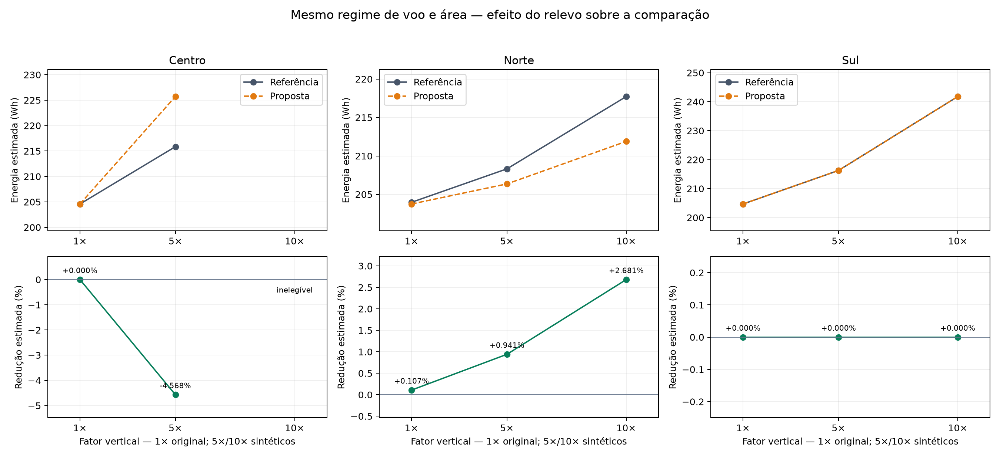
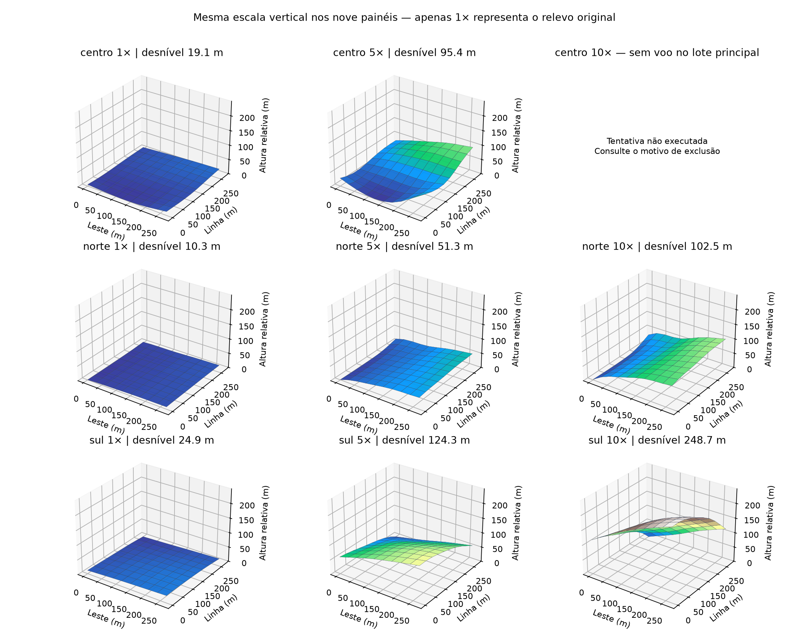

O lote principal registrou 16 voos físicos no CoppeliaSim, com 8/9 pares elegíveis. A comparação registrou reduções em 3 pares, empates em 4 e aumentos em 1. O centro 10× foi bloqueado antes da execução por falta de suporte físico de uma célula do trajeto. Esse par foi executado em separado, com terreno de suporte maior; sua falha original continua no denominador. Aumentar o relevo não demonstrou uma vantagem geral do algoritmo atual.
Foram testados os mesmos três recortes com fatores verticais de 1×, 5× e 10×. Apenas 1× representa o TOPODATA original; os demais são terrenos sintéticos derivados.
O cenário 1× foi reexecutado no mesmo regime dos demais: 4.0 m/s, altura-alvo de 100.0 m, largura de aplicação de 120.0 m e faixas a cada 90.0 m. Os dois métodos usam a mesma origem, retorno, controlador, terreno e modelo de energia. Passos temporais registrados: 0.050 s.
| Recorte | Fator | Desnível (m) | Referência (Wh) | Proposta (Wh) | Redução estimada (%) | Cobertura ref./prop. (%) | Par válido |
|---|---|---|---|---|---|---|---|
| centro | 1× | 19.1 | 204.589 | 204.589 | 0.000 | 100.0/100.0 | Sim |
| norte | 1× | 10.3 | 203.965 | 203.746 | 0.107 | 100.0/100.0 | Sim |
| sul | 1× | 24.9 | 204.696 | 204.696 | 0.000 | 100.0/100.0 | Sim |
| centro | 5× | 95.4 | 215.854 | 225.714 | -4.568 | 100.0/100.0 | Sim |
| norte | 5× | 51.3 | 208.317 | 206.357 | 0.941 | 100.0/100.0 | Sim |
| sul | 5× | 124.3 | 216.267 | 216.267 | 0.000 | 100.0/100.0 | Sim |
| centro | 10× | — | — | — | — | —/— | Não |
| norte | 10× | 102.5 | 217.725 | 211.888 | 2.681 | 100.0/100.0 | Sim |
| sul | 10× | 248.7 | 241.795 | 241.795 | 0.000 | 100.0/100.0 | Sim |
| Caso | Estado | Erro de execução | Motivos de exclusão |
|---|---|---|---|
| centro_x10 | failed | A rota sai do terreno físico. Aumente terrain_padding_cells antes da coleta. | voo_ausente;voo_ausente |
| Fator | Pares válidos/previstos | Redução média por recorte (%) | Reduções / empates / aumentos |
|---|---|---|---|
| 1× | 3/3 | 0.036 | 1 / 2 / 0 |
| 5× | 3/3 | -1.209 | 1 / 1 / 1 |
| 10× | 2/3 | 1.341 | 1 / 1 / 0 |
Se os conjuntos elegíveis diferirem entre os fatores, as médias agregadas não constituem uma comparação completa do efeito do relevo. A leitura principal deve acompanhar a mesma origem nos três níveis.
| Recorte | Fator | Distância ref./prop. (m) | Duração ref./prop. (s) | Subida ref./prop. (m) |
|---|---|---|---|---|
| centro | 1× | 1767.8/1767.8 | 445.9/445.9 | 36.6/36.6 |
| norte | 1× | 1766.2/1766.0 | 445.8/445.8 | 20.0/13.7 |
| sul | 1× | 1767.7/1767.7 | 445.8/445.8 | 41.1/41.1 |
| centro | 5× | 1818.6/1909.6 | 458.6/481.3 | 180.6/168.6 |
| norte | 5× | 1782.0/1774.5 | 449.2/447.4 | 97.7/66.2 |
| sul | 5× | 1817.1/1817.1 | 457.9/457.9 | 203.0/203.0 |
| centro | 10× | —/— | —/— | —/— |
| norte | 10× | 1829.6/1800.2 | 461.4/454.0 | 194.8/131.7 |
| sul | 10× | 1961.1/1961.1 | 495.5/495.5 | 406.0/406.0 |
| Recorte | Fator | Colisões ref./prop. | Violações de altura ref./prop. | Menor altura ref./prop. (m) | Intervalos fora do envelope ref./prop. |
|---|---|---|---|---|---|
| centro | 1× | 0/0 | 0/0 | 98.0/98.0 | 0/0 |
| norte | 1× | 0/0 | 0/0 | 99.5/99.7 | 0/0 |
| sul | 1× | 0/0 | 0/0 | 99.1/99.1 | 0/0 |
| centro | 5× | 0/0 | 0/0 | 88.1/87.2 | 0/0 |
| norte | 5× | 0/0 | 0/0 | 94.9/96.3 | 0/0 |
| sul | 5× | 0/0 | 0/0 | 92.9/92.9 | 0/0 |
| centro | 10× | —/— | —/— | —/— | —/— |
| norte | 10× | 0/0 | 0/0 | 89.4/92.0 | 0/0 |
| sul | 10× | 0/0 | 0/0 | 85.6/85.6 | 0/0 |
As métricas de voos inelegíveis podem ser parciais. Elas ficam identificadas na primeira tabela e não sustentam comparação de economia.
Em centro, faltou um par elegível em pelo menos um nível; a tendência completa permanece indeterminada. Em norte, a vantagem estimada cresceu com o relevo. A mudança entre o último e o primeiro nível foi de 2.574 pontos percentuais. Em sul, o resultado do último nível empatou com o controle 1×. A mudança entre o último e o primeiro nível foi de 0.000 pontos percentuais.
A referência mantém faixas horizontais; a proposta escolhe entre horizontal e vertical pelo custo de distância e subida. As orientações e os custos planejados de cada caso estão no CSV. O peso de subida e o modelo energético permaneceram iguais em todos os níveis; não foram ajustados para produzir ganho.
O custo de distância 3D + peso × subida não é energia em Wh. Uma rota com menos subida pode gastar mais se aumentar distância ou duração. A escolha atual minimiza esse custo auxiliar, não diretamente a energia estimada do voo.


Reduções positivas favorecem a proposta; negativas representam piora. Falhas e cobertura insuficiente ficam no denominador, com redução em branco. O CSV contém também distância, duração e subida acumulada. Valores de energia de voos inelegíveis são parciais e não podem ser usados para anunciar economia.
Os fatores foram definidos antes da coleta; não se escolheu apenas o terreno favorável. As versões ampliadas são variações dos mesmos recortes, não novas fazendas independentes. Este teste mostra como o comportamento muda com o relevo nas condições registradas.
A energia é estimada por um modelo teórico não calibrado. O benchmark anterior encontrou falha do controlador ao alterar o passo para 0,025 s. O presente experimento mantém 0,05 s e não resolve essa limitação. Não comprova economia real de bateria nem generalização.
O comparativo anterior usava 8 m/s e altura-alvo de 60 m. Seus Wh não devem ser comparados diretamente aos atuais para atribuir a diferença exclusivamente ao relevo; use o controle 1× desta coleta.
Consulte paired/index.html para os pares individuais, inclusive motivos de exclusão e rastreabilidade. As versões com relevo maior são identificadas no painel do CoppeliaSim.
O planejador levou a proposta até a linha 16 do grid, enquanto o terreno físico do lote principal começava na linha 17. A checagem recusou o voo antes da execução. O suplemento aumenta apenas o entorno de três para quatro células, mantendo missão, rotas, algoritmo, modelo energético, velocidade, altura e critérios. Os dois métodos usam o mesmo suporte ampliado. Ele não substitui a tentativa original nem entra nas médias por fator acima. Para futuras coletas completas, a configuração foi corrigida para quatro células em todos os casos e recebeu uma regressão geométrica dos nove pares.
| Desnível | Referência (Wh) | Proposta (Wh) | Redução estimada (%) | Cobertura ref./prop. (%) | Par elegível |
|---|---|---|---|---|---|
| 190,873 m | 240.265 | 249.679 | -3.918 | 100.000/100.000 | Sim |
| Métrica do centro10× | Referência | Proposta |
|---|---|---|
| Distância executada (m) | 1960.879 | 2055.451 |
| Duração observada (s) | 495.600 | 518.850 |
| Subida executada (m) | 361.395 | 334.322 |
| Custo auxiliar planejado (não é Wh) | 5611.289 | 5419.074 |
| Energia de voo horizontal/sustentação estimada (Wh) | 227.717 | 238.070 |
| Energia adicional de subida estimada (Wh) | 12.548 | 11.608 |
No suplemento, a proposta reduziu a subida, mas percorreu aproximadamente 94,6 m e 23,3 s a mais. A economia no componente de subida foi menor que o acréscimo de sustentação e voo horizontal. O custo auxiliar planejado caiu enquanto a energia estimada aumentou.
O protocolo da intervenção e os dados ficam em registro do reparo, voos suplementares e auditoria pareada. O relatório completo do suplemento é output/experiments/relief_centro_x10_repair_20261029/report/index.html.
A coleta final usou uma instância isolada do mesmo CoppeliaSim, sem janela, com física, controlador e passo temporal comuns. A interface de apresentação usa a Radeon RX 560X, confirmada no log do OpenGL. O par suplementar foi coletado em uma instância com janela, com a renderização desativada durante os voos. As tentativas anteriores com interrupção de scripts ou comunicação estão no histórico técnico; seus resultados parciais não foram mesclados aos deste lote.
Os dados integrais estão em output/experiments/relief_benchmark_20261028_isolated/. O relatório HTML é relief_report_final/index.html. Foram salvas cenas nativas presentation_centro_x10/comparacao_lado_a_lado.ttt, presentation_norte_x10/comparacao_lado_a_lado.ttt e presentation_sul_x10/comparacao_lado_a_lado.ttt. O centro 10× fica ativo pela ordem do manifesto. A visualização reproduz telemetrias registradas, em loop a 4×, sem nova física simultânea.
Este resumo conserva todos os voos, a comparação por par, os níveis, as tentativas técnicas anteriores e a proveniência com hashes.
A suíte automatizada passou com 207 testes e 46 avisos de descontinuação da dependência rasterio/Affine. O registro da verificação identifica o comando utilizado; a validação por testes não substitui as limitações físicas expostas acima. A regressão adicional verifica o suporte físico dos nove recortes antes de qualquer novo voo.
A função atual de distância mais penalização de subida não minimiza os Wh estimados do voo. O próximo experimento deve desenvolver uma seleção de rota por custo energético coerente com duração, voo horizontal e subida, usando terrenos de desenvolvimento. Congelar a nova regra antes de testar outros recortes, mantendo estes resultados como referência histórica. Não reajustar o avaliador ou selecionar apenas um relevo que produza ganho.
Em paralelo, corrigir e validar o controlador e a resolução temporal, depois calibrar e avaliar o consumo com medições elétricas independentes. O planejador implementado usa busca heurística A* em 2,5D e escolha de orientação; não contém um modelo aprendido. A referência também usa A*. Uma conclusão sobre aprendizado ou economia real de bateria exige essas implementações e evidências adicionais.